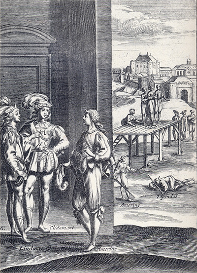
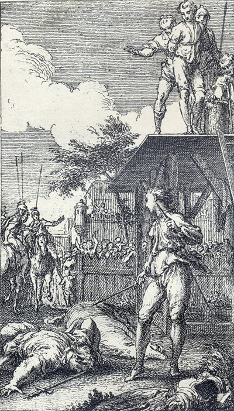

L'Astrée
d'Honoré d'Urfé
Première partie
Livre 12

Amerine (sic Mélandre) raconte son histoire à Clidaman et Lindamor (sic Guyemant)
(I, 12, 383 verso)
Au second plan, Amerine (sic Mélandre) défait Lypandas sous les yeux de Lydias
(I, 12, 390 recto)
Au fond, la ville de Calais
L'AstréeI, 12. Édition Vaganay**, 1925Amerine (sic Mélandre) raconte son histoire à Clidaman et Lindamor (sic Guyemant)
(I, 12, 383 verso)
Au second plan, Amerine (sic Mélandre) défait Lypandas sous les yeux de Lydias
(I, 12, 390 recto)
Au fond, la ville de Calais
(Voir Illustrations)

L'AstréeI, 12. Édition Vaganay**, 1925Mélandre défait Lypandas sous les yeux de Lydias (I, 12, 390 recto)
(Voir Illustrations)
Édition de 1607, 481 recto (sic pour 381 recto).
Édition de Vaganay, p. 455.
Histoire de Lydias et de Mélandre
Considérant les étranges accidents qui arrivent par l'Amour, il me semble
que l'on est presque
contraint d'avouer que si la
quelquefois la chaleur trop âpre du Soleil. Bref, cette vue lui remit devant les yeux la plupart des contentements qu'il payait à cette heure si chèrement, et en cette considération, s'étant assis au pied d'un arbre, il soupira tels vers :
RESSOUVENIR
Ici mon beau Soleil repose,
Quand l'autre paresseux s'endort ;
Et puis le matin quand il sort,
Couronné d'œillet et de rose,
Pour chasser l'effroi de la nuit.
Deçà premièrement reluit
Le Soleil que mon âme adore,
Apportant avec lui le jour,
À ces campagnes qu'il honore,
Et qu'il va remplissant d'Amour.
Sur les bords de cette rivière,
Il se fait voir diversement,
Quelquefois tout d'embrasement,
D'autres fois couvrant sa lumière,
Il semble devenu jaloux,
Qu'il se veuille ravir de nous,
Ainsi que sous la nue sombre,
Le Soleil cache sa beauté,
Sans que toutefois si peu d'ombre,
Puisse en bien couvrir la clarté.
Mais que veut dire qu'il ne brûle,
Comme on voit que l'autre Soleil,
Dis-moi, n'ai-je point de raisons
De me plaindre de ce divorce,
Et de t'en adresser mes cris ?
Combien avons-nous nos écrits
Fiés dessous ta sûre garde,
Dans le creux du tronc mi-mangé ?
Mais ores que je te regarde,
Combien, saule, tout est changé !
Sur une trop
prompte mort
Vous, qui voyez mes tristes pleurs,
Si vous saviez de quels malheurs
J'ai l'âme atteinte,
Au lieu de condamner mon œil,
Vous ajouteriez votre deuil
Avec ma plainte.
Dessous l'horreur d'un noir tombeau,
Ce que la terre eut de plus beau
Est mis en cendre.
Ô destin trop plein de rigueur,
Pourquoi mon corps, comme mon cœur,
N'y peut descendre ?
Elle ne fut plus tôt ça bas
Que les Dieux par un prompt trépas,
Me l'ont ravie ;
Céladon, qui ne voulait point être vu de personne qui le puisse connaître, d'aussi loin qu'il vit ce Berger, commença peu à peu de se retirer dans l'épaisseur de quelques arbres. Mais, voyant que sans s'arrêter à lui, il passait outre, pour s'asseoir au même lieu d'où il venait de partir, il le suivit pas à pas, et si à propos qu'il put ouïr une partie de ses plaintes. L'humeur de ce berger inconnu sympathisant avec la sienne le rendit curieux de savoir par lui des
Fin de la première partie d'Astrée.

Livre 11

Tables
Référence électronique :
document.write('"'+document.title.substr(0, document.title.indexOf("-")-1)+'". '+"Dernière mise à jour : "+ExtractDate(document.lastModified)+".")Deux visages de L'Astrée.
©2005-2020 E. Henein.
URL :
var today = new Date();
document.write(document.URL +
"<br>Consulté le : " + today.toLocaleDateString("fr-FR") + ".");
var _gaq = _gaq || [];
_gaq.push(['_setAccount', 'UA-19288475-1']);
_gaq.push(['_trackPageview']);
(function() {
var ga = document.createElement('script'); ga.type = 'text/javascript'; ga.async = true;
ga.src = ('https:' == document.location.protocol ? 'https://ssl' : 'http://www') + '.google-analytics.com/ga.js';
var s = document.getElementsByTagName('script')[0]; s.parentNode.insertBefore(ga, s);
})();
Deux visages de L'Astrée.
©2005-2019 Eglal Henein. Creative Commons 4 
Édition critique de la première partie de L'Astrée (1607, 1621)
mise en ligne le 9 avril 2007
Édition critique de la deuxième partie de L'Astrée (1610, 1621)
mise en ligne le 10 octobre 2010
Édition critique de la troisième partie de L'Astrée (1619, 1621)
mise en ligne le 1er novembre 2014
Édition critique de la quatrième partie de L'Astrée (1624)
mise en ligne le 15 janvier 2019
document.write("Dernière mise à jour : "+ExtractDate(document.lastModified))